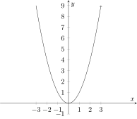
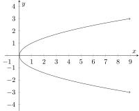
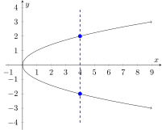
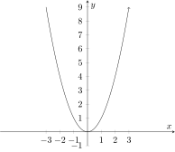
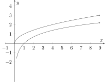
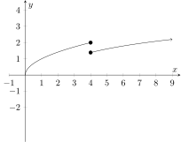
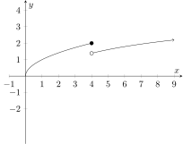

Is the relation represented by the above graph a function?
Yes No There is not
enough information to tell.
This section describes the vertical line test and why it works.
When you learned about functions in grade school you were probably taught the “vertical line test”; a method for determining if a graph represents a function. Recall the property that defines a function is that every input only has one output, which is not inherently graphical. It turns out that this is easy to see in a graphical setting though. Consider the following graph:

In order to determine if this graph represents a function, we would need to know if there is one output (-value) for each input (-value). What would it look like if this weren’t the case? If there were more than one output for the same input, that means that one -value would have more than one -value associated to it. Since values are the vertical value between the -axis and the point, if we had multiple -values for the same -value, there would be two points on the same vertical line. This is the Vertical Line Test.
The easiest way to apply the vertical line test is to imagine a straight edge (or actually get one if you can) sweeping from left to right across the entire plot and see if the curve hits the straight edge more than once at any point.
Consider the previous graph again but this time apply the vertical line test.

As we can see, the vertical line appears to intersect the plot in two distinct places. Thus this quick visual observation (the vertical line test) can tell us at a glance that the relation we are looking at is not a function.

Is the relation represented by the above graph a function?

Is the relation represented by the above graph a function?

Is the relation represented by the above graph a function?

Is the relation represented by the above graph a function?